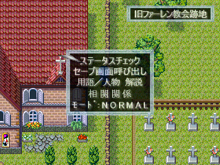

＜＜メニュー説明／その他＞＞
|
メニューもＲＰＧツクール２０００の標準的な規格から外れています。
ここでは、それについて説明します。
|
■ メニューリスト |

通常マップ上で『キャンセルキー』を押下すると、メニューリストが表示されます。
○ ステータスチェック
能力値の確認と変更ができます。
能力値の変更はいつでも行う事ができます。
○ セーブ画面呼出
ＲＰＧツクール２０００の通常のセーブ画面を呼び出します。
○ 用語／人物解説
前作をプレイした事がない方、または忘れてしまわれた方でわからない用語があり、
それが物語の展開を把握する上で支障があった場合に、ご参照くだされば一助になるかと思います。
○ 相関関係
物語の展開に合わせて、各登場人物間の関係が逐次反映されて情報として表示されます。
おまけ的要素ですが、ゲーム中の人間関係を把握する上で一助となれば幸いです。
※ かなり処理が重いですが、直にゲームには影響がありませんのでご容赦ください。
○ モード
『Normal』と『Easy』モードがあります。
『Easy』モードに設定すると敵の能力値が下がり、戦闘が容易になります。
強敵に阻まれて先に進めなくなり、能力値を変更してトライしてみても勝てず、どうしようも無くなった時にお勧めします。
ここで注意が必要なのが『Easy』モードで戦闘に勝利した場合、経験値が減ります（貰えるはずのチップの欠片が減ります）
このゲーム、システム解説で述べているように、敵は限られた数しかいません。
一度取り逃したチップの欠片は二度と手に入らず、代わりに補う物もないと言う事です。
最強を目指されない場合は気にする必要もありませんが、取り逃しが重なると行き詰まる可能性もありますのでご注意ください。
※ 隠しボスとラスボスでは自動的に解除されますのでご注意ください。
|
■ その他 |
○ ダッシュ機能
通常マップ上で『決定キー』を押下すると、移動速度が通常の２倍になります。
|
○ クリア後のおまけ
クリア後に表示されるクリアコードを、相関図右下へ入力すると、少しのおまけがあります。
1) 相関図が完全バージョンになる
2) ある人物と戦えるようになる
|